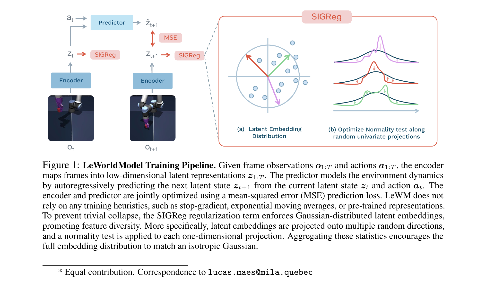
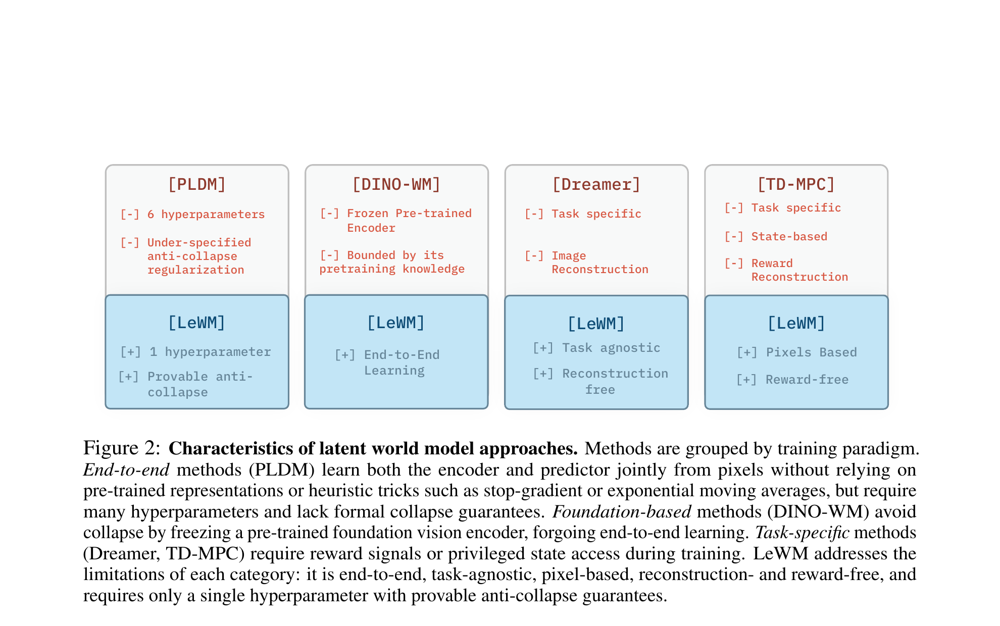

LeWorldModel: Stable End-to-End Joint-Embedding Predictive Architecture from Pixels
Lucas Maes et al. · Mila / NYU / Samsung SAIL / Brown · arXiv:2603.19312v2 · 2026
训练目标、SIGReg、路线对照、latent MPC 与核心实验已成；附录证明与全部环境消融待扩展。
§1 它不是把 V-JEPA 做大，而是把训练“拆到只剩两项”
V-JEPA 2 依赖预训练 encoder、EMA target 与 stop-gradient；这很稳，但 encoder 的知识被 foundation pretraining 限定。LeWorldModel 追问：能否直接从当前环境的原始像素和动作，端到端学 encoder + dynamics，同时又不坍缩？答案是一项 next-latent prediction loss 加一项让 latent 服从各向同性高斯的 SIGReg。
| 输入 | 离线轨迹中的原始像素 $o_{1:T}$ 与动作 $a_{1:T}$。 |
| 模型 | 约 15M 参数 encoder + predictor，单 GPU 数小时训练。 |
| 监督 | 无 reward、无任务标签、无像素重建。 |
| 删掉 | 预训练 encoder、EMA teacher、stop-gradient、多项 VICReg-style loss。 |
§2 两项 loss：预测负责动力学，SIGReg 负责不坍缩
如果只做下一 latent 的 MSE，encoder 最容易把所有画面压成同一个常数。SIGReg 不规定“每个画面该是什么”，而是从批量 latent 的许多随机一维投影上做正态性检验，让整体分布接近 $\mathcal N(0,I)$。常数解无法满足分布约束，信息维度也不容易被挤死。

- $z_t=E_\theta(o_t)$
- 当前帧的低维 latent state。
- $P_\phi(z_t,a_t)$
- 动作条件动力学预测器。
- $\|\cdot\|_2^2$
- 下一表征 MSE，逼迫 latent 对可预测动力学敏感。
- $\operatorname{SIGReg}$
- 把批量 embedding 分布推向各向同性高斯，避免常数解与维度坍缩。
- $\lambda$
- 唯一主要 loss 权重；论文强调只剩一个需调的超参数。
§3 它同时针对四条旧路线的不同短板
LeWM 的论点不是所有 foundation encoder 都不好，而是四类方法各自换来一种依赖：PLDM 要多项防坍缩正则；DINO-WM 被冻结表征上限约束；Dreamer 要重建且任务化；TD-MPC 常依赖 reward 或 state。LeWM 尝试给出同一套 reward-free、pixel-based、reconstruction-free 的端到端配方。

§4 Latent planning：小 latent 让 CEM/MPPI 搜索快得多
规划时编码初始观测与目标图像，predictor 对候选动作序列 rollout 到 $z_H$，以 $z_H$ 到目标 $z_g$ 的距离为 cost，再用优化器更新动作。因为每帧只有少量 latent token，LeWM 报告比 DINO-WM 最多快 48×；这正是 latent 路线相对视频生成 WAM 的核心工程价值。
- $z_1,z_g$
- 起点与目标图像的 latent。
- $\hat z_H$
- predictor 对候选动作 rollout 后的终点 latent。
- $d$
- latent cost，不需要 RGB decoder。
- $a_{1:H}^{\star}$
- 搜索得到的动作序列；闭环时通常只执行前一小段再规划。
§5 证据、亮点与边界
| 效率 | 15M 参数，单 GPU 数小时；规划最多比 DINO-WM 快 48×。 |
| 任务 | PushT、TwoRoom、OGBench-Cube 等 2D/3D manipulation、navigation、locomotion。 |
| 物理表征 | 线性 probe 可读出物理量；物体 teleport 会造成显著 surprise spike，颜色变化较弱。 |
| 限制 | 仍依赖 action-labelled offline trajectory；短 horizon；低内在维度数据会让高维高斯匹配困难。 |
LeWorldModel 对研究价值很高：它给出“小模型、单卡、端到端”的 JEPA baseline，适合做表征、动力学与规划的受控实验；但它暂时不是互联网规模 foundation world model，也不是高频真机 WAM。